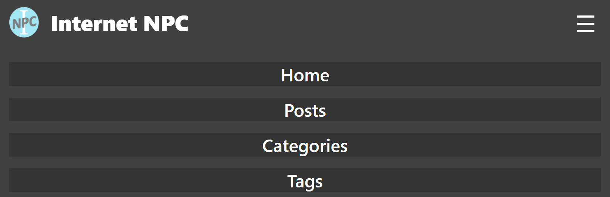

RWD 響應式網頁設計

一個好的網頁必須考慮到使用者會藉由不同螢幕大小的裝置來檢視，像是電腦、平板、手機等螢幕尺寸差異會很大，可能你的網頁在電腦上看是正常的，到了手機上就擠成一團，所以我們得引入 RWD 的概念來讓網頁在不同螢幕尺寸時有不同的顯示方式。
RWD
全名為 Responsive Web Design / 響應式網頁設計，主要是希望網頁在不同尺寸的裝置上都能有適當的呈現方式，減少使用者滑動或縮放的操作，我很喜歡 wiki 上的圖片說明:

內容就像水一樣，能夠根據裝置變化為合適的樣貌，要達成這點最常見的處理方式就是偵測網頁的寬度，當寬度縮小到一個下限時，就把部分資訊欄位隱藏或是收縮起來。
以本網頁為例，如果是在電腦上看應該會在左側看到目錄、右側看到相關文章推薦，如果將頁面的寬度慢慢下降到 1000px 以下，兩側欄位會直接隱藏，避免內文被擠壓過頭，此外頁首的部分也會把 nav 收縮起來，改成以下拉式選單呈現。
CSS @media
想要實現 RWD 的網頁設計，最簡單的方式是透過 CSS 內建的 @media rule 達成; 它能根據裝置的 media type 來決定是否套用部分 CSS styles，在 RWD 中就是以網頁寬度來控制:
@media (max-width: 1000px) {
#side-area {
display: none;
}
...
}
使用上很直觀:
-
設定條件 - 條件由 () 所包起來，螢幕寬度可以設定成
min-width(>= 我觸發)max-width(< 我觸發)，並透過and,or來實現複雜邏輯。以上設定為寬度小於 1000px 時觸發。 - 要套用的 sytles - 可以接多個 style，這邊就是把一些區塊的顯示關掉。
你可能會覺得這個 min-width, max-width 不太直觀，放心你不孤獨XD，在 CSS Media Queries Level 4 後就有提供以下這種更方便的寫法，底下是當螢幕尺寸介於 480px 跟 1000px 才會套用的寫法，數學式就就直觀多了 (^u^)
@media (480px <= width <= 1000px) {
...
}
由於 CSS 是放在後面的 style 能夠複寫前面的，建議是把 @media 區塊放在後面。
範例
在此介紹一下本網頁如何實作寬度縮小時，標頭的連結 (Home, Posts, Categories, Tags) 自動轉成下拉選單 (menu):

- 先產生出下拉清單的符號 (hamburger menu) 跟連結 nav，初始狀態是只顯示 nav、不顯示 menu:
<button id="hamburger">☰</button> <nav id="site-nav"> ... </nav>#hamburger { display: none; } - 設定 @media 網頁寬度小於 1000px 時的 style，讓 nav 隱藏並顯示出 menu，此外還修改了 nav 的顯示屬性，使其變成每個連結都是單獨一行:
這麼做的目的是當 nav 的 display 打開就會有下拉的清單出現， 值得注意的是裝 nav 的外部元素必須採用@media (width < 1000px) { #site-nav { display: none; flex-direction: column; width: 100%; } #hamburger { display: block; } }flex-flow: row wrap;，這樣才會使 nav 自動換到下一行。 - 接下來要設定點擊後 menu 修改 nav 的 display，我們可以先設定一個 class 為 open 的屬性顯示，然後用 JS 幫 nav 加上 open class 即可:
#site-nav.open { display: flex; }let menu = document.getElementById("hamburger"); menu.addEventListener( "click", () => { let siteNav = document.getElementById("site-nav"); // 如果 class 有包含 open 則移除，沒有則加入 open siteNav.classList.toggle('open'); } );
總結
以上就是透過 @media 來達成 RWD 網頁的介紹，透過 @media 來設定寬度條件並動態套用 style，讓網頁在手機等裝置上也能清楚呈現，並結合 JS 來實踐下拉選單將資訊保留，騰出更多版面給你的內文。